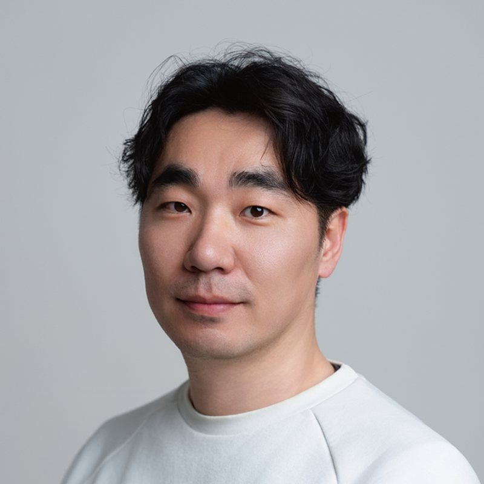

M Gallery Artist · 회화 (먹 · 아크릴)
이정식JEONGSIK YI
단국대학교에서 동양화를 공부했어요. 먹과 아크릴로 작업하고, 작품이 천안시립미술관·천안시청 등에 소장되어 있어요. 2013년 충남미술대전 대상을 받았어요.
인스타그램 @jiwoo_yijeongsik
Works
작품 14점
사진을 누르면 크게 보여요.
ink, acrylic on canvas · 390×162cm
ink, acrylic on canvas · 53×41cm
ink, acrylic on canvas · 130×162cm
ink, acrylic on canvas · 53×41cm
ink, acrylic on canvas · 60.6×45.5cm
ink, acrylic on canvas · 91×72cm
ink, acrylic on canvas · 53×41cm
ink, acrylic on canvas · 53×41cm
ink, acrylic on canvas · 45.5×53cm
ink, acrylic on canvas · 116.8×80cm
ink, acrylic on canvas · 116.8×80cm
ink, acrylic on canvas · 60.6×40.9cm
ink, acrylic on canvas · 40.9×27.3cm
ink, acrylic on canvas · 60.6×40.9cm
Profile
약력
학력
- 2018 단국대학교 대학원 회화과 동양화전공 졸업
- 2016 단국대학교 예술대학 동양화과 졸업
수상
- 2018 도솔미술대전 최우수상
- 2017 전국대학미술공모전 특선
- 2016 문경새재휘호대회 특선
- 2015 추사휘호대회 특선
- 2014 남농미술대전 특선
더 보기
- 2013 충남미술대전 대상
개인전
- 2025 Circulation (명동갤러리, 천안)
- 2024 헤테로토피아 (M갤러리, 천안)
- 2023 There (M갤러리, 천안)
- 2022 산수플랫폼展 (갤러리산책, 아산)
- 2021 Start over (서북갤러리, 천안) · 유전-교차점 (문화상회다담, 수원)
더 보기
- 2019 Exodus (삼거리갤러리, 천안)
- 2017 낮은음자리 (갤러리미술세계, 서울)
그룹전
- 2026 검은산 붉은몸 2인전 (홍대 아트앤디자인밸리, 서울)
- 2026 五人五色, 한곳에 머물다 (헤라스아트, 서울)
- 2025 이쪽과 저쪽 2인전 (M갤러리, 천안)
- 2024 당신의 안뇽 (M갤러리, 천안)
- 2024 Light, Color, Line (몸갤러리, 서울)
더 보기
- 2023 관계도시 유동하는 미래 (천안시립미술관)
- 2023 천안비전23 (리각미술관, 천안)
- 2018 아시아프 (동대문DDP, 서울) 외 다수
작품 소장
- 천안시립미술관, 대전검찰청 천안지검, 충청남도 홍성군청, 천안시청
현재
- 대한민국전통예술전승원 이사, 한국미술협회 청년분과 부위원장